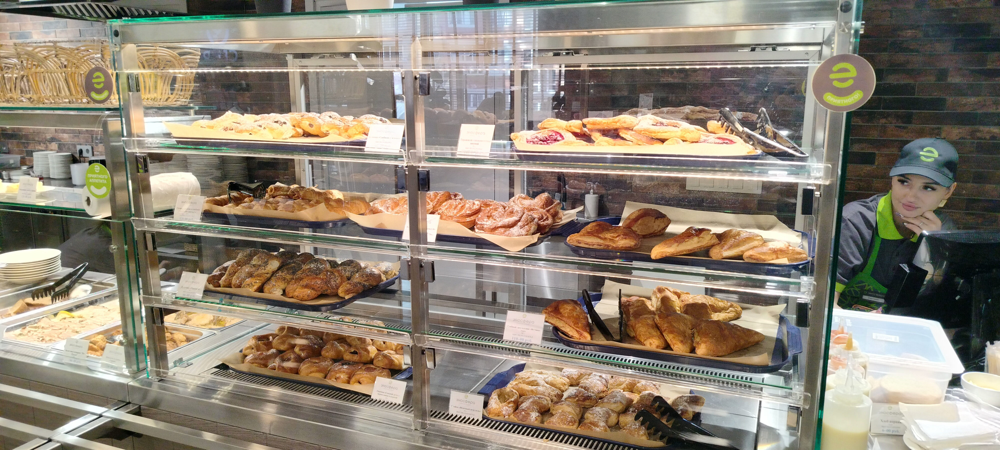
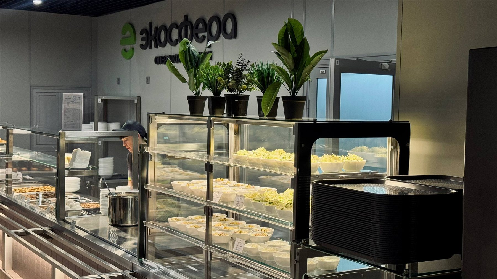
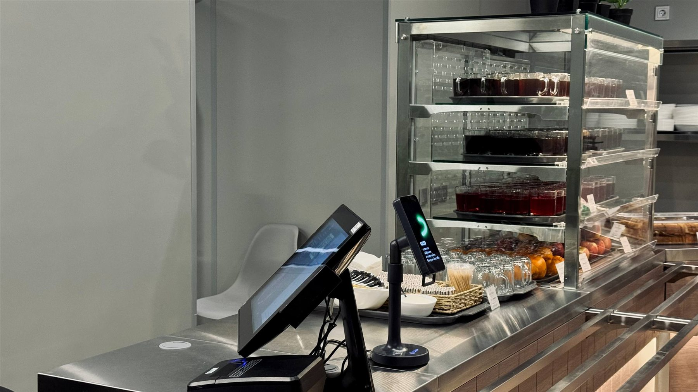
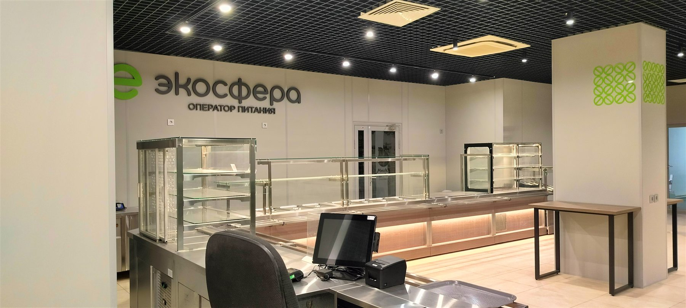
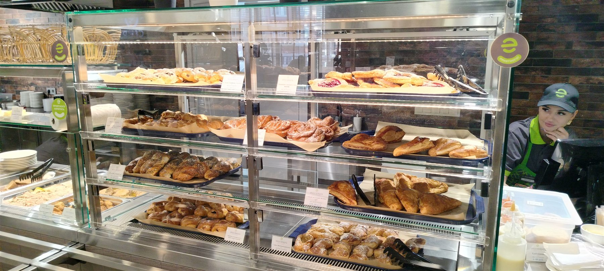
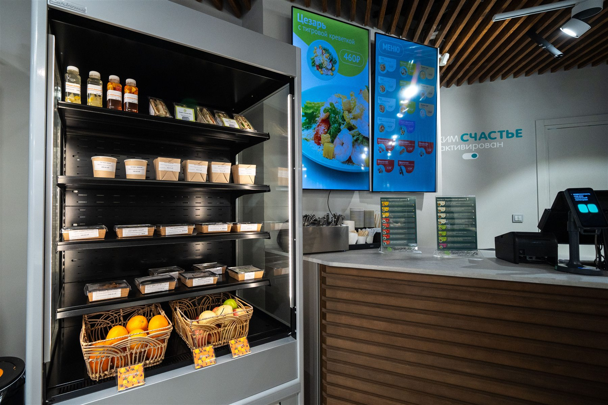
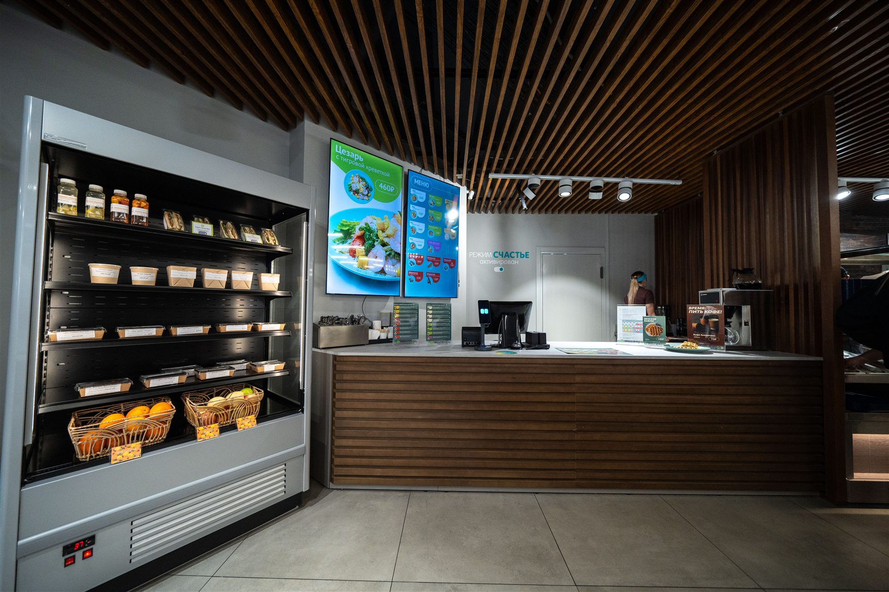
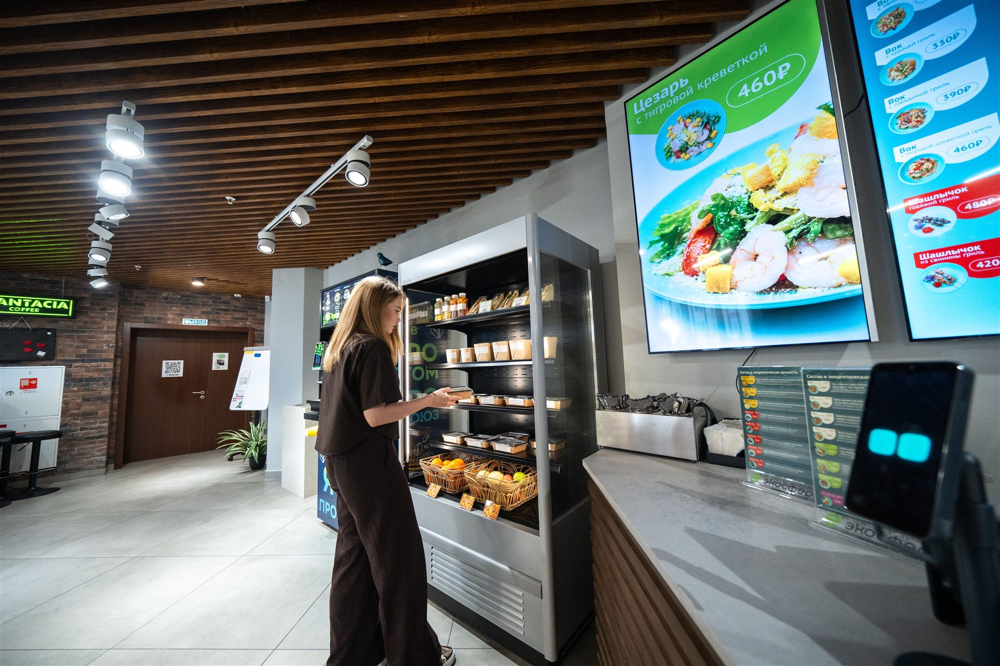
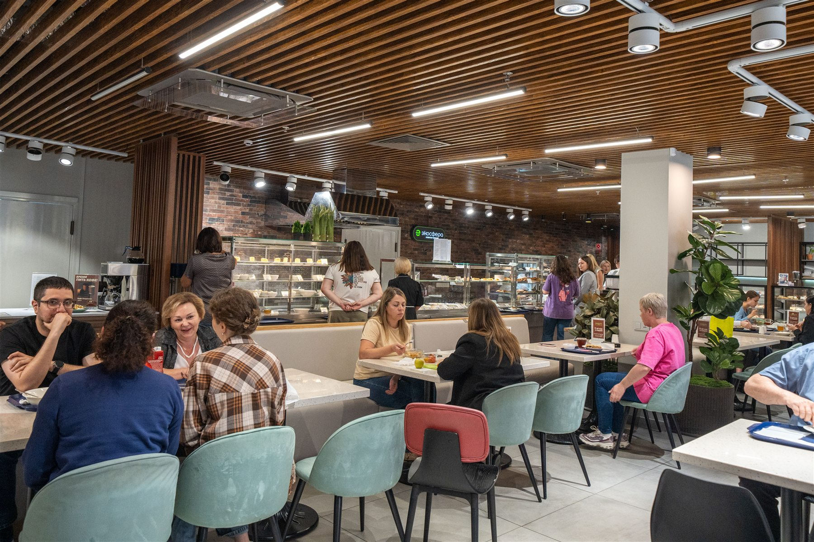

Стабильное питание
С учётом сменности и графика предприятия.
Персональное предложение для СЗСП
Федеральный опыт «ЭкоСферы» и управляющая команда в Самаре — для создания стабильной системы питания, встроенной в производственный ритм СЗСП.
От обследования столовой и подготовки запуска до ежедневного приготовления блюд, снабжения, контроля качества и развития сервиса.


Федеральная экспертиза · Самарская ответственность
01 / О СЗСП
Самарский завод слоистых пластиков — современное предприятие полного цикла, которое производит декоративный бумажно-слоистый пластик Arcobaleno на высокотехнологичном оборудовании.
Но основа предприятия — его коллектив. Это люди, которые знают производство, отвечают за качество продукции и связывают с предприятием своё будущее.
Мы хотим создать для них питание, соответствующее уровню завода: стабильное, качественное, безопасное и удобное для каждого рабочего дня.
Сильное производство начинается с внимания к людям.

сотрудников СЗСП работают на предприятии более пяти лет
02 / Результат для СЗСП
Система, которая учитывает рабочий график предприятия, поддерживает сотрудников и снимает операционную нагрузку с команды заказчика.
С учётом сменности и графика предприятия.
Понятный уровень качества и пищевой безопасности.
Бесперебойные поставки и резервные сценарии.
Операционные вопросы берёт на себя «ЭкоСфера».
Отчётность и контролируемые расходы.
Оперативное подключение к решению вопросов.
Сервис меняется вместе с потребностями сотрудников и задачами СЗСП.
03 / Почему «ЭкоСфера»
«ЭкоСфера» — федеральный оператор корпоративного питания с центральным офисом и управляющей командой в Самаре.
Мы понимаем специфику родного региона: рынок труда, локальных поставщиков, логистику и особенности работы промышленных предприятий.
При этом наша экспертиза сформирована на объектах по всей России — от Поволжья до Заполярья и Дальнего Востока.
Мы рядом географически и понимаем производственный контекст.
Команда находится рядом и оперативно подключается к решению вопросов.
Понимаем особенности логистики, поставок и подбора персонала.
Используем опыт запуска объектов питания в разных регионах России.
Закрепляем руководителей и выстраиваем понятное взаимодействие.
04 / Опыт на производстве
Промышленная столовая должна работать так же надёжно, как производственная линия: соблюдать график, выдерживать нагрузку и обеспечивать стабильный результат каждый день.

«ЭкоСфера» организует питание на заводах, производственных площадках, строительных объектах и вахтовых комплексах. Мы учитываем сменность персонала, пиковые часы, требования охраны труда, бесперебойность поставок и необходимость быстро решать операционные вопросы.
05 / Управляемая система
Питание сотрудников работает без сбоев и не создаёт дополнительной нагрузки на административную команду завода.

Система работает как единый производственный контур
Учитываем сменность, пиковые часы, длительность перерывов и загрузку столовой.
Формируем основной и резервный пул поставщиков, контролируем остатки.
Соблюдаем санитарные требования, охрану труда и правила предприятия.
Технологические карты, санитарные регламенты и ежедневный контроль.
Отчётность, контроль стоимости порции, продаж, списаний и охвата питанием.
06 / Форматы питания
Учитываем инфраструктуру, численность коллектива, сменность и доступное пространство.




Полноценное производство блюд на территории предприятия, линия раздачи и зал для сотрудников.
Для ежедневного питания коллектива и обслуживания нескольких смен.



Готовые блюда, выпечка, напитки, снеки и позиции быстрого выбора в течение дня.
Для дополнительных точек питания и сотрудников с разным временем перерыва.Варианты учёта и оплаты
Каждому сотруднику предоставляется установленный заводом лимит. Питание оплачивает заказчик, а все операции фиксируются в системе учёта.
Сотрудники самостоятельно оплачивают выбранные блюда на кассе — банковской картой, наличными или другим согласованным способом.
При необходимости модели можно объединить: часть стоимости оплачивает предприятие, разницу сотрудник доплачивает самостоятельно.
07 / Полный цикл
Последовательно выстраиваем систему и отвечаем за результат на каждом этапе.
Помещения, оборудование, инженерные системы, численность и смены.
Формат, пропускная способность, график, ассортимент и экономика.
Подбор, обучение и ответственность за каждый участок производства.
Цикличное меню, технологические карты и резервные поставки.
Подготовка, тестирование процессов и старт по согласованному графику.
Контроль качества, обратная связь, анализ спроса и обновление ассортимента.
09 / Команда запуска
За запуск и дальнейшую работу отвечают руководители, которые лично участвовали в создании и управлении крупными объектами питания.
Управляющая команда «ЭкоСферы» находится в Самаре. Это сокращает путь от вопроса до решения.
Руководитель проекта
В общественном питании с 1997 года. Открывал и управлял ресторанами и столовыми в Москве, Санкт-Петербурге, Самаре, Калуге, Красноярске и других городах. Участвовал в организации питания во время чемпионата мира по футболу 2018 года в 11 городах России.
Операционный директор
Многолетний опыт в сетевых проектах KFC на Урале и в городах Поволжья. Возглавлял службу питания на заводе КАМАЗ: 46 объектов и более 20 000 питающихся. Руководил объектами питания Сбера в Хабаровске и привёл их к высоким операционным результатам.

Руководитель производства
Более 27 лет опыта в производстве. Работал в крупных гостиничных сетях и возглавлял направление общественного питания Мордовского государственного университета: 40 объектов и более 13 000 студентов и преподавателей.
Руководитель отдела закупок
Почти 40 лет в отрасли, более 15 лет — в закупках и логистике. Управляла ресторанными группами и более чем 50 объектами питания компании «Транснефть».